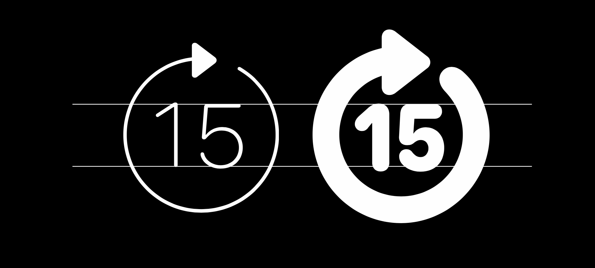
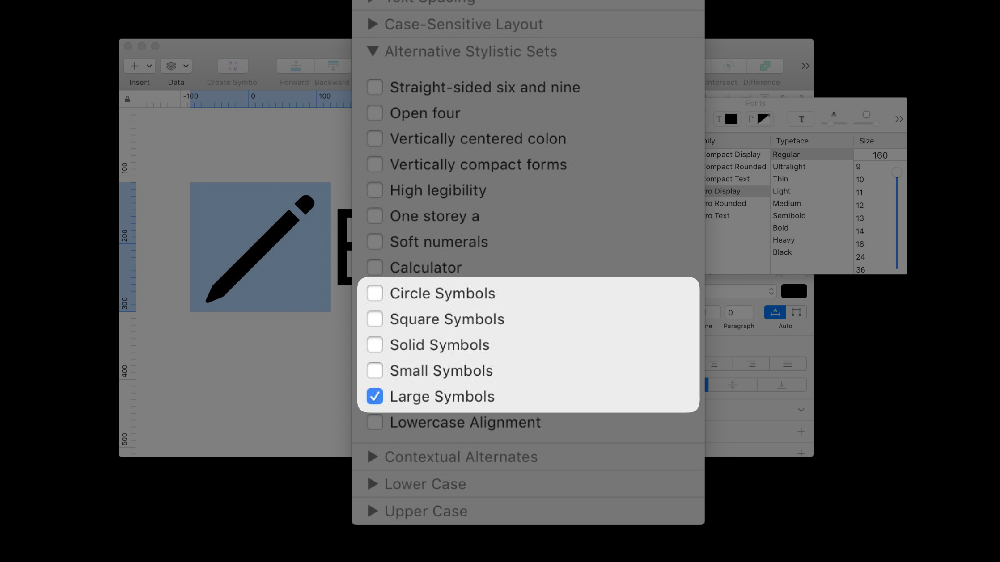
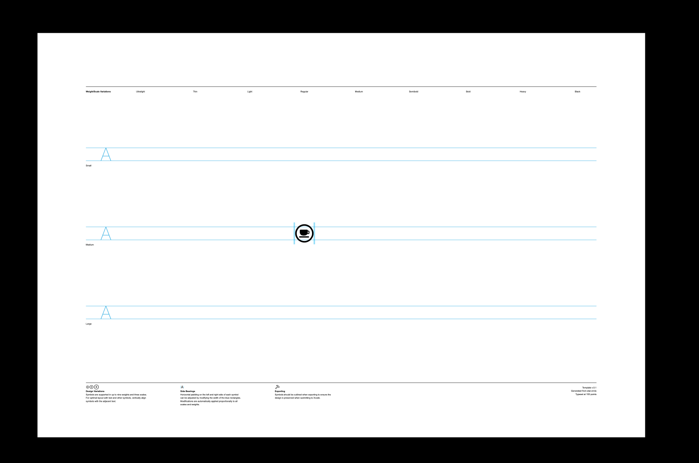
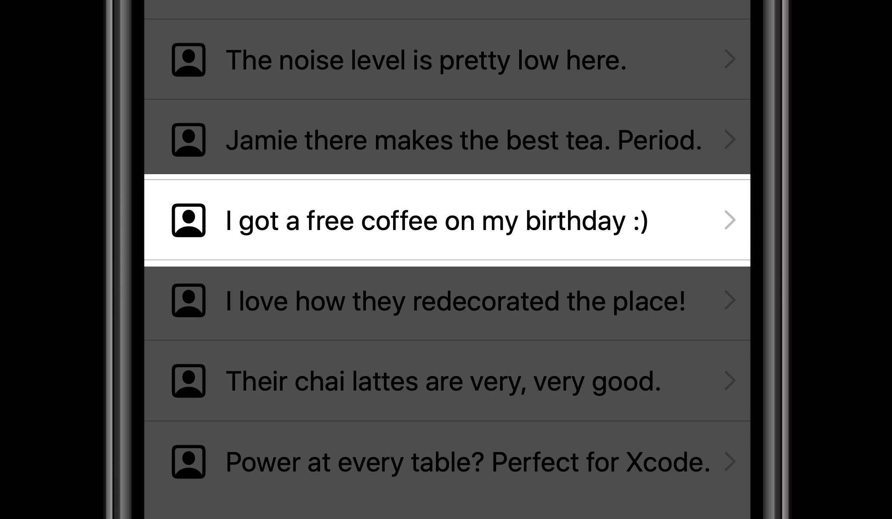

标志（symbol）在界面中扮演一个非常重要的角色，它们在表达某些含义时非常有效，它们可以表明哪个条目被你选中了，它们被用来在视觉上区分不同的内容类型。标志出现在系统的不同情景中。它们给用户在整个用户界面中创造了一种熟悉的感觉。
标志可以在不同的方式中被使用，设计标志也是一个内在的挑战。这些标志要设计得与其他 UI 元素完美得匹配在一起，比如文本。在 UI 中文本会有不同的尺寸，标志也是这样。

所以为了让这项工作变得更为简单，在 iOS 13 中我们重新设计了所有的标志。你会知道这些标志怎样有一个圆形套在外面，怎样在字重上更粗一点。他们可以完美地与文字相搭配。除了重新设计所有已有的标志，我们还扩展了这个列表，设计了更多的标志。它们统称为「SF Symbols」。它们在整个平台具有高度一致性，可以高质量地应用在你的所有 app 中。它们采用矢量形式，这意味着它们可以放大缩小，无论大尺寸还是小尺寸都能被渲染地很好。
针对于系统字体 San Francisco 的不同字重，SF Symbols 也有着不同的字重与之搭配。
这里有超过 1000 个标志可供选择使用。如果这里的标志仍然不够，你甚至可以自动以他们，并创建自己的标志。
目录
在设计时使用 SF Symbols
字号、对齐
SF Symbols 可以像文本一样指定字号。当标志和文本并排在一起时，它们拥有相同的基线。
当标志和文本竖直放在一起时，这里通常会有两种情况：文本支撑标志或者标志支撑文本。
水平对齐可以确保每一项都看起来没问题，这得益于标志的边界。每一个标志的边界并不一定相同。边界是不可见的，但当在屏幕上布局元素时会需要用到边界。
字重、缩放
每一个标志都有着九种不同的字重，从超细到超粗，对应系统字体的不同字重。每一个字重都被手动绘制出来，特别考虑了每种不同的设计。更细的字重有着可区分的、优雅的外表，而更粗的字重会尽力保持细节和可见性。

当与文本搭配使用，即使文本字号没有变化，可能也需要不同大小的标志。这就是之前我们设计标志时要考虑的问题，取决于我们要多强调标志，取决于有多大的展示空间。在 iOS 13 里，我们把这些变成了系统功能。我们称这一个特性为「scales 缩放」——分为三种，小、中等、大。

这里注意下，在调整标志的缩放大小时，其字号大小（point size）是始终不变的。调整标志的缩放，会有与文本相匹配的字重，并且会与文本的大写字母高度始终竖直中心对齐。
对于该在哪里使用不同的缩放，什么时候该用哪一个具体的 缩放，这里有三个具体的示例。它们都包括了字号为 17 的文本，但每个标志的容器有着不同的高度。文字和标志的字号是相同的，但通过改变标志的缩放来更好地适配不同情况的空间。在像工具栏这样的地方，UIKit 可以自动对控件使用合适的缩放。
综合使用
我们把字号大小、字重、缩放三者放在一起看，这意味着你可以在动态类型中使用它们，每一项都会很完美。
当然，标志也可以被本地化。这里有一个语音备忘录应用的例子，在英语和阿拉伯语的不同运行情况下，同一个标志有着不同的样式。
如果你想搞清楚这些标志的话，每一个标志都提供了一个名字。大多数的标志还会有描边和填充两种样式。
它们还可以被包在一个圆圈或者一个方形中，还可以带有一个标准的系统角标。
使用这些标志也很方便。它们属于 SF 字体家族的一部分，可供下载，你可以在你的设计中使用。缩放功能可以通过 open Type 功能开启。默认缩放是中等，你可以在字体面板中选择小或大的缩放，抑或其他指定 UI 形状。

为了更方便使用，我们创建一个名为「SF Symbols」的应用。可以在里面通过平铺方式或者列表方式浏览所有的标志。可以通过名字搜索标志，预览不同的字重。

我们来看一个实际的例子。在下面的设计中，按以前的操作，你需要定义图片的边界，确定图片的大小、四周边界值。
但有了 SF Symbols，你只需要确定标志的名字和字号大小以及对齐方式就可以了，如果有需要可以再定义字重和缩放。
第二行的图片有些普通，我们可以自己绘制一个茶杯的形状。因为 SF Symbol 里没有这个图形，我们可以自定义一个。
你可以从已有的标志中选取一个相似的，导出并作为模板。导出的模板包括所有的字重和缩放大小，并且是 SVG 格式，可以使用自己熟悉的设计工具进行编辑。
这个文件可以直接被用于开发时的 Xcode 中，不再需要许多个文件。
在所有的字重和缩放中，你至少需要提供 regular 字重的中等规模标志样式。

进一步可提供其他两种缩放的样式，进一步可提供 medium 和 bold 两种字重。当然，也需要根据你 app 的排版样式有针对性的考虑。
制作好的自定义标志可以在「SF Symbols」app 中浏览。
设计小结
在开发中使用 SF Symbols
使用系统提供的 SF Symbols
下面这个 app 提供了滑块的相关功能，可以通过控制滑块或者两边的按钮来调节速度，但是目前的加减图片不太好，我尝试用 SF Symbols 来替换这两张图片。
在 SF Symbols app 中可以找到「乌龟」和「野兔」两个标志，分别代表更慢和更快。
可以利用新的 API：UIImage(systemName:) 来替换相应的图片，具体的代码如下：
// You’re eager to use one of these 1500+ new system symbols
// It’s easy!
slowerImageView.image = UIImage(systemName: "tortoise")
fasterImageView.image = UIImage(systemName: "hare")
使用自定义 symbols
在开发中要使用上图的自定义标志，需要将设计师提供的「teacup.svg」文件导入 Xcode 中，在代码中使用 API UIImage(named:) 即可调用这个自定义标志，具体代码如下：
// And you want to use the image your designer made?
// It's just like it was:
cupView.image = UIImage(named: "teacup")
不止你有没有注意到在资源目录中同时存在两个名称为「teacup」的资源文件，它们都是图片，都不是相同的类型，一个是普通 png 格式图片，一个是 svg 格式的标志。
以前的时候你通过 UIImage(named:) 这个 API 调用图片文件名非常直接和方便，当有了 SF Symbols 时，事情会变得稍微有些复杂。以文件名「envelope」为例，解释下这里。同一个文件名的图片，这里可能有三个版本：一个是系统标志，一个是自定义标志，还有一个是非标志的普通图片。
对于系统标志没有什么问题，因为它是通过 API UIImage(systemName:) 单独的命名空间来调用的，不会与其他的产生冲突。
而对于自定义标志和普通图片来说，它们都是通过 API UIImage(named:) 来调用的。系统会优先调用自定义标志文件，如果没有再调用普通类型的图片文件。这样做的好处是，不需要多余的代码，不需要版本检查代码，在 iOS 12 或更早版本可以显示普通类型的图片，而在 iOS 13 或之后版本中可以利用 SF Symbols 的功能显示自定义标志。
配置 SF Symbols 的参数
我们需要对「teacup」这个标志进行配置，其缩放是「large」,可以利用新的 API UIImage.SymbolConfiguration() ，具体代码如下：
// Our designer specified to use a large configuration:
let configuration = UIImage.SymbolConfiguration(scale: .large)
imageView.preferredSymbolConfiguration = configuration
想改变标志的更多参数，比如字号、字重，具体的代码如下：
// Symbols are typographic in nature, and it reflects
// in how you configure them
// typographic points, not screen points
let headlineConfig = UIImage.SymbolConfiguration(pointSize: 23.0f, weight: .medium)
// you can always add a scale
let annotationConfig = UIImage.SymbolConfiguration(pointSize: 17.0f, scale: .small)
在这里注意，标志的「pointSize」指的是字体字号大小，而不是屏幕尺寸大小。
如下图所示，下面这个标志其字号尺寸是 28 pt，但其物理尺寸是 33pt × 32pt。你应该把标志看作是文本的一部分。
正因为标志就像文本一样，所有标志可以配置它的文本类型（text style），以支持系统的动态类型功能。具体代码如下：
// Symbols are typographic in nature, and it reflects
// in how you configure them
// dynamic type text styles
let footnoteConfig = UIImage.SymbolConfiguration(textStyle: .footnote)
// … you can always add a scale
let introConfig = UIImage.SymbolConfiguration(textStyle: .body, scale: .large)
如果 app 使用了非系统字体，标志的参数也可以根据自定义字体进行变化。当你已经有了一段配置好属性的文本，你就不需要一个个属性地去调整标志。具体代码如下：
// Symbols are typographic in nature,
// and it reflects in how you configure them
titleLabel.font = style.titleFont()
let configuration = UIImage.SymbolConfiguration(font: titleLabel.font, scale: .large)
titleImage.preferredSymbolConfiguration = configuration
关于标志的属性它是一个常量，它是不可变的。如果你想利用已有的属性值，你可以通过方法 applying 去创建了一个新的属性，从而间接修改已有的属性，并应用在你需要的地方。具体代码如下：
// It’s also possible to combine configurations、
let boldLargeConfig = UIImage.SymbolConfiguration(weight: .bold, scale: .large)
let smallConfig = UIImage.SymbolConfiguration(scale: .small)
let config = boldLargeConfig.applying(smallConfig)
// config will be .bold, .small
使用 SF Symbols 进行布局

上图这个 app，每一行都有一个头像、一条文字评论和一个箭头。对于头像可以使用 SF Symbols，一般情况下头像与右边的文字是竖直中心对齐的，即使右边的文字大于一行，也是可以的。

要想让头像与第一行文字对齐，有两种方法，一种是让头像和文字的边缘对齐，还有一种方法是让头像的基线与第一行文字的基线对齐。对于第二种方法，在 iOS 13 中，对于图片新增了一个 baselineOffsetFromBottom 属性，正如名字所示，它表示从底部到基线的偏移值，它是一个可选的 CGFloat 类型。对于 SF Symbols 来说，它默认具有这个属性，而对于普通图片来说，它默认不具有这个属性。查看图片的这个属性的具体代码如下：
// You can inspect the baseline values on images
// Expressed in screen points from the bottom of the image
let chevron = UIImage(systemName: “person.square”)
// Not all images have baselines!
if let offset = chevron.baselineOffsetFromBottom {
// …
}
下图中的两个标志和文字的基线相同，可以看到下箭头标志的偏移值是「-3.5」，而云朵标志的偏移值是「+4.5」，所以说基线可能不在图片的边界之内。如果偏移值为 0，并不是说没有基线，而是基线与图片的底部是重合的。
对于默认没有基线的普通图片，我们可以通过 API withBaselineOffsetFromBottom 来为其添加基线。具体的代码如下：
// You can add baselines to any image
// Important: baseline offsets are in screen points.
let avatarImage: UIImage?
if let loadedImage = AvatarCache.load(forUser: user.id) {
// give the avatar a baseline
avatarImage = loadedImage.withBaselineOffsetFromBottom(3.5f)
}
else {
avatarImage = UIImage(systemName: “person.square”)
}
通过以上代码，为普通图片添加了基线，这样普通图片和标志可以用同一逻辑进行统一的布局。
在按钮中使用 SF Symbols
为了区分不同的情况，在这里把按钮可以分为三种，第一种是系统按钮，第一种是普通按钮，第三种是栏上的按钮（bar buttons)。先来看系统按钮。
在 UIKit 中的所有「系统按钮」都有一个预置的配置参数，他是「body」文本类型，「large」缩放大小。在系统按钮中使用 SF Symbols 的具体代码如下：
// System buttons have a default configuration of: .body, .large
let watchImage = UIImage(systemName: “stopwatch”)
let startButton = UIButton.system(image: watchImage,
target: self,
action: #selector(startTimer))
再来看普通按钮。在下图的这个例子中，有一个 pop-over 弹窗，在其中有两个动作按钮。在普通按钮上使用 SF Symbols，默认缩放大小是「medium」。
在普通按钮上使用 SF Symbols 并改变其属性值的具体代码如下：
// Buttons have a default configuration of .medium
// use setPreferredSymbolConfiguration() to change
let checkButton = UIButton(type: .custom)
checkButton.setImage(UIImage(systemName: "check"), forState: .normal)
let config = UIImage.SymbolConfiguration(textStyle: .caption, scale: .small)
button.setPreferredSymbolConfiguration(config, forState: .normal)
对于下图中左右两个按钮，左边按钮是一个标志，右边按钮是文字，虽然它们没有紧挨在一起，但它们应该有同样的参数。它们应该有着同一条基线值，有着同样的属性（字体、字号、字重、文本样式等）。这样来看，可以让布局的思考更加简单。
最后来看栏上的按钮（bar buttons）。在 iOS 13 中，所有 bar buttons 的图片资源也已经使用 SF Symbols 更新过了。
对于 bar buttons，也有预置的属性。栏上按钮在像 iPhone 竖屏高度上是 regular 这种尺寸等级（size class）的屏幕上是「large」缩放大小，而在高度上是 compact 这种尺寸等级的屏幕上是「medium」缩放大小。这也意味着你不需要针对高度不同的栏提供两套不同的栏上按钮资源文件。
SF Symbols 的渲染模式（render mode）
对于普通图片来说都有颜色数据，而对于 SF Symbols 来说其没有固定的颜色。我们可以通过描边颜色（tint color）来渲染标志。如果没有描边颜色，会使用黑色。但黑色并不总是合适，比如在深色模式中。

以前图片的渲染模式都是自动的，都是原始颜色。而现在来说对于非标志类型的图片仍然是这样，对于标志类型的图片将会是根据描边颜色来显示。
绘制一个标志的具体代码如下：
// Drawing symbols
let cupImage = UIImage(named: "teacup")
let receipt = UIGraphicsImageRenderer(size: receiptSize).image {
// …
cupImage.draw(at: .zero) // use natural size of the image
// …
}
如果觉得绘制的标志太小，可以通过下面的代码创建一个新的属性，并创建一张新的标志图片。
let cupImage = UIImage(named: "teacup")
let configuration = UIImage.SymbolConfiguration(pointSize: 34.0f, weight: .bold)
let largeTeacupImage = cupImage.withConfiguration(configuration)
回到之前的 pop-over 页面，我们想要让其中的某些文字用标志替代。

因为标志是图片，我们要把标志通过一些方法转换为字符串，具体的代码如下：
// Symbols in strings
// — use attachments
let string = NSMutableAttributedString(string: "I just symbol images!",
attributes: [.foregroundColor: UIColor.label])
let heartImage = UIImage(systemName: "heart.fill")
let heartAttachment = NSTextAttachment(image: heartImage)
let heartString = NSAttributedString(attachment: heartAttachment)
string.insert(heartString, at: 7)
转换后的标志会根据匹配的文字来自动确定属性值，比如颜色、大小等。进一步，要想改变插入文字中的这些标志的颜色，可以通过下面的代码实现，其中可以选择是否改变渲染模式：
// Tinting images
// — apply a color to the whole image
let heartImage = UIImage(systemName: "heart.fill")
let redHeartImage = heartImage.withTintColor(.redColor, renderingMode: .alwaysOriginal)
几个注意点
参考链接
- SF Symbols - SF Symbols - Human Interface Guidelines - Apple Developer
- Introducing SF Symbols - WWDC 2019 - Videos - Apple Developer
如果你觉得这篇文章对你有所帮助，欢迎请我喝杯咖啡，感谢你的支持😁